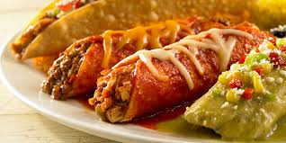

La comida mexicana es reconocida por su gran variedad de sabores, ingredientes y tradiciones. Algunos de los platillos más populares son los tacos, tamales, enchiladas y pozole.
Además de ser deliciosa, la gastronomía mexicana forma parte de la cultura e identidad del país. Sus recetas han pasado de generación en generación durante muchos años.
